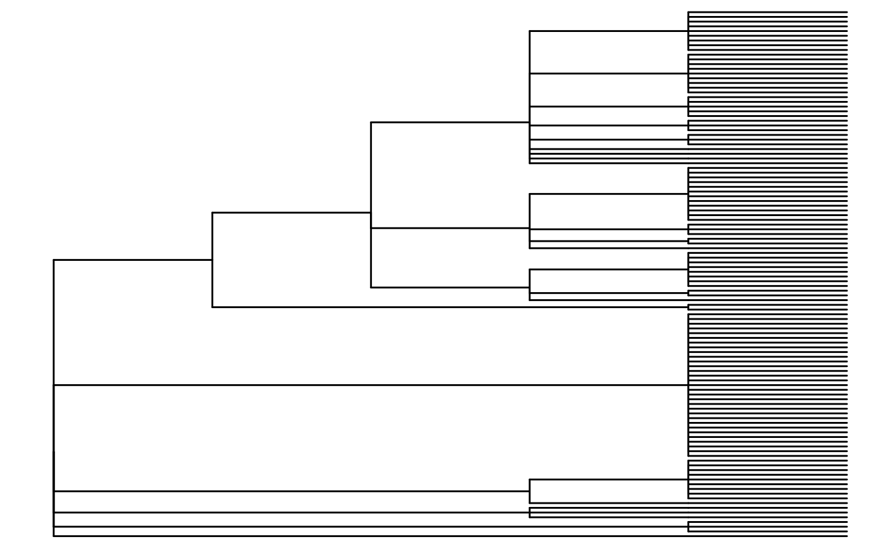

intro
intro.Rmd
library(ape)
library(rotl)
library(dplyr)
#>
#> Attaching package: 'dplyr'
#> The following object is masked from 'package:ape':
#>
#> where
#> The following objects are masked from 'package:stats':
#>
#> filter, lag
#> The following objects are masked from 'package:base':
#>
#> intersect, setdiff, setequal, union
library(datelife)
library(BiocManager)
#> Bioconductor version '3.16' is out-of-date; the current release version '3.17'
#> is available with R version '4.3'; see https://bioconductor.org/install
library(ggtree)
#> ggtree v3.6.2 For help: https://yulab-smu.top/treedata-book/
#>
#> If you use the ggtree package suite in published research, please cite
#> the appropriate paper(s):
#>
#> Guangchuang Yu, David Smith, Huachen Zhu, Yi Guan, Tommy Tsan-Yuk Lam.
#> ggtree: an R package for visualization and annotation of phylogenetic
#> trees with their covariates and other associated data. Methods in
#> Ecology and Evolution. 2017, 8(1):28-36. doi:10.1111/2041-210X.12628
#>
#> Guangchuang Yu, Tommy Tsan-Yuk Lam, Huachen Zhu, Yi Guan. Two methods
#> for mapping and visualizing associated data on phylogeny using ggtree.
#> Molecular Biology and Evolution. 2018, 35(12):3041-3043.
#> doi:10.1093/molbev/msy194
#>
#> Guangchuang Yu. Using ggtree to visualize data on tree-like structures.
#> Current Protocols in Bioinformatics. 2020, 69:e96. doi:10.1002/cpbi.96
#>
#>
#> Attaching package: 'ggtree'
#> The following object is masked from 'package:ape':
#>
#> rotate
asco_tree <- read.tree(file = "../data-raw/asco.tre")
ggtree(asco_tree)
plot.phylo(asco_tree)